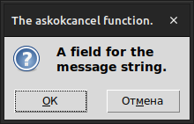
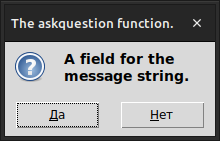
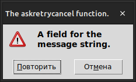
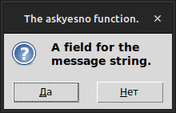
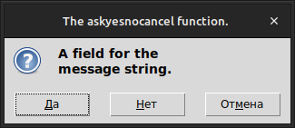
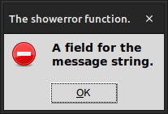
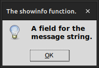
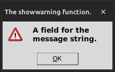

Импортировав модуль "messagebox"
from tkinter import messagebox
вы можете создать любое, из восьми распространенных всплывающих меню, вызывая функции из этой таблицы.
|  | .askokcancel(title, message, options) |
|  | .askquestion(title, message, options) |
|  | .askretrycancel(title, message, options) |
|  | .askyesno(title, message, options) |
|  | .askyesnocancel(title, message, options) |
|  | .showerror(title, message, options) |
|  | .showinfo(title, message, options) |
|  | .showwarning(title, message, options) |
В каждом случае:
title - это строка, которая будет отображаться в верхней части оформления окна.
message - это строка, которая отображается в теле всплывающего окна; текст в этой строке переносится на символах новой строки ('\n').
options - этот аргумент может быть любым из следующих вариантов:
default
Кнопка, которая будет выделена по умолчанию. Если вы не укажете этот параметр, то это будет первая слева кнопка ("OK", "Да" или "Повторить").
Чтобы указать, какая кнопка будет выделена, используйте default=c, где c - одна из этих констант, определенных в MessageBox: 'abort', 'retry', 'ignore', 'ok', 'cancel', 'no', или 'yes'.
icon
Указывает, какая иконка будет отображаться во всплывающем окне. Используйте аргумент вида icon=i, где i - одна из этих констант, определенных в MessageBox: 'error', 'info', 'question', или 'warning'.
parent
Если вы не укажете этот параметр, всплывающее окно появится над вашим корневым окном. Чтобы заставить всплывающее окно отображаться над каким-либо дочерним окном W, используйте аргумент parent=W.
В зависимости от того какую кнопку выберет пользователь, функции возвращают следующие значения:
| Функция | КнопкаOK |
КнопкаДа |
КнопкаНет |
КнопкаОтмена |
КнопкаПовторить |
|---|---|---|---|---|---|
askokcancel |
True |
False |
|||
askquestion |
'yes' |
'no' |
|||
askretrycancel |
False |
True |
|||
askyesno |
True |
False |
|||
askyesnocancel |
True |
False |
None |
||
showerror |
'ok' |
||||
showinfo |
'ok' |
||||
showwarning |
'ok' |
Например, этот код:
result = messagebox.askyesnocancel(title='Выход из приложения',
message='Сохранить ваши файлы перед выходом из приложения?',
default='cancel', icon='warning')
создаст окно с заголовком title, сообщением message, иконкой предупреждения и выделит кнопку "Отмена". Переменная result получит значение, соответствующее нажатой кнопке; См. таблицу выше.